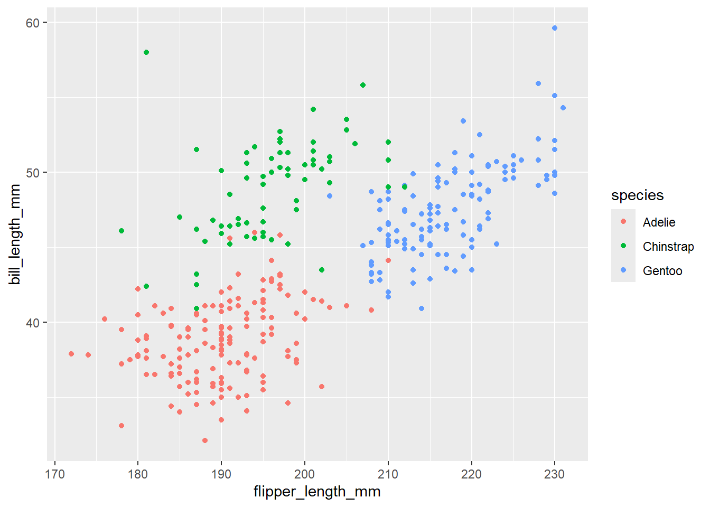
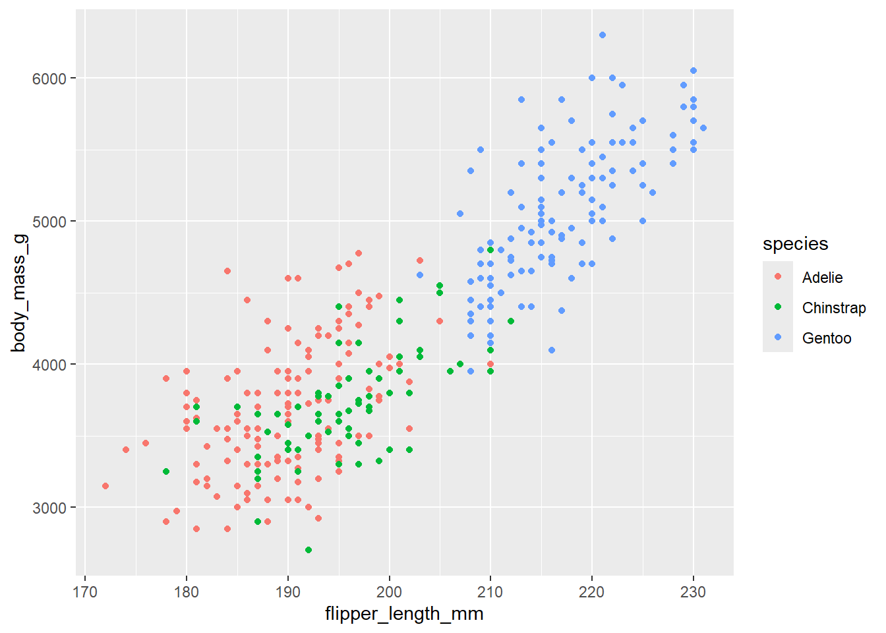
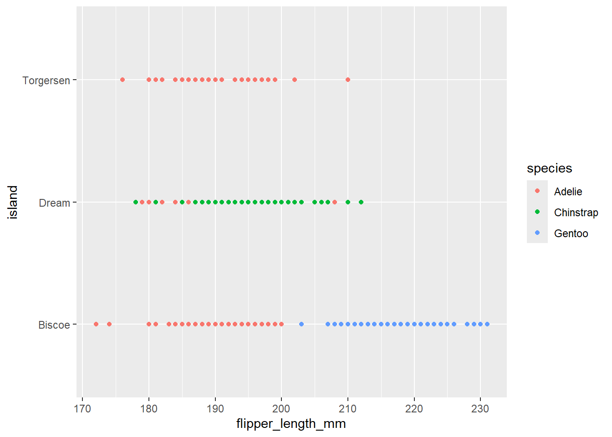
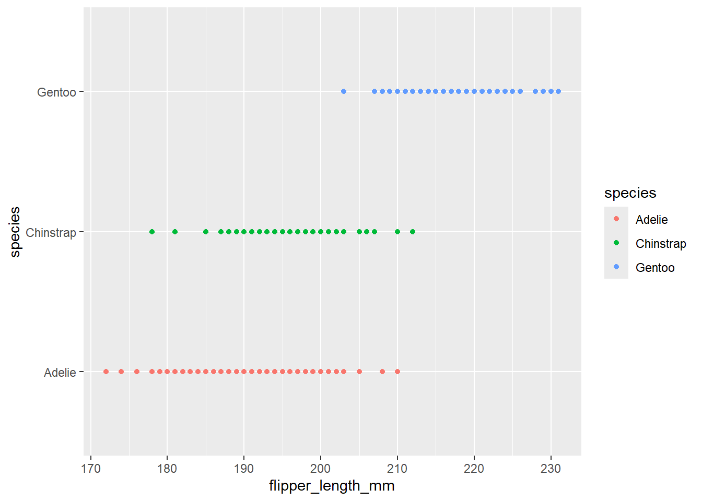
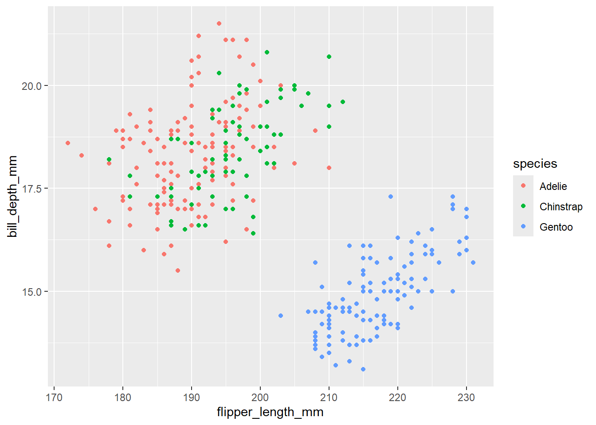
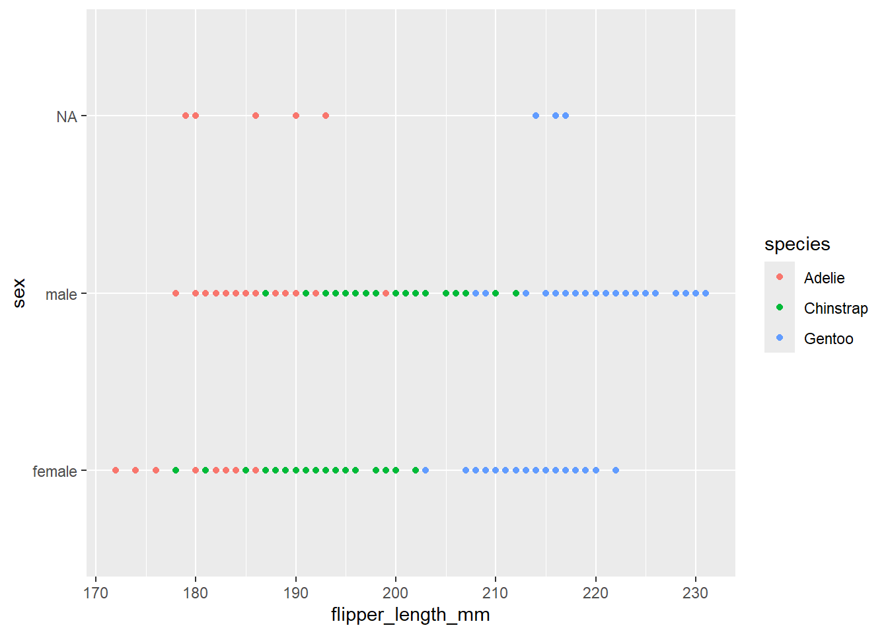
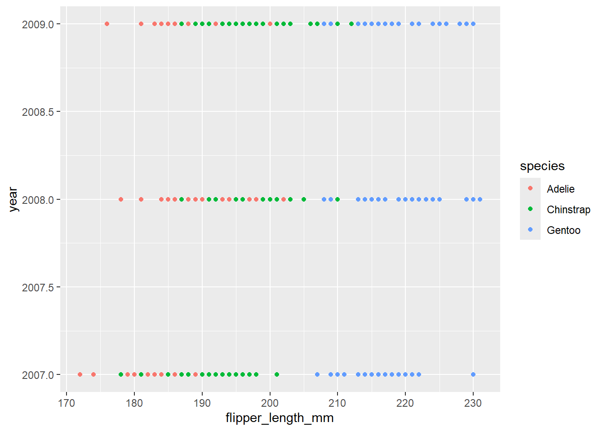

library(lme4)
library(tidyverse)
# install.packages("palmerpenguins") # install if needed
library(palmerpenguins)Assignment 2: Wrapping up regression
Wrapping up linear and logistic regression*
Assignment 2 covers linear and logistic regression models and includes many of the topics we have covered over the entire semester. You will be using palmerpenguins data, which includes a nice variety of continuous and categorical predictors.
To submit this assignment, render this file and save as a pdf. Commit & push this qmd to GitHub and upload the pdf to Canvas.
*This assignment does not include mixed effects models, but you will be seeing that on another assignment.
Load Packages
Load Data
Load the penguins data and examine it below (use summary(), etc.)
penguins <- penguins
summary(penguins) species island bill_length_mm bill_depth_mm
Adelie :152 Biscoe :168 Min. :32.10 Min. :13.10
Chinstrap: 68 Dream :124 1st Qu.:39.23 1st Qu.:15.60
Gentoo :124 Torgersen: 52 Median :44.45 Median :17.30
Mean :43.92 Mean :17.15
3rd Qu.:48.50 3rd Qu.:18.70
Max. :59.60 Max. :21.50
NA's :2 NA's :2
flipper_length_mm body_mass_g sex year
Min. :172.0 Min. :2700 female:165 Min. :2007
1st Qu.:190.0 1st Qu.:3550 male :168 1st Qu.:2007
Median :197.0 Median :4050 NA's : 11 Median :2008
Mean :200.9 Mean :4202 Mean :2008
3rd Qu.:213.0 3rd Qu.:4750 3rd Qu.:2009
Max. :231.0 Max. :6300 Max. :2009
NA's :2 NA's :2 ??penguinsstarting httpd help server ... doneQuestion 1: Describe the data
What information is contained in this data set? Describe at least four variables (excluding year), including what they represent and their data type. Lastly, describe whether you think year would be a useful predictor in this data.
Answer:
species - the type of penguin that is used in the data (Adelie, Chinstrap, and Gentoo), the data type is factor.
sex - Whether the penguin is a male or female, the data type is also factor.
body-mass_g - An integer of the body mass of the penguins in grams, the data type is integer.
island - the type of island that the penguins are from (Biscoe, Dream, or Torgersen), the data type is factor.
I think year would be a useful predictor for this data because different years have different events, causing changes to specific things that can be measured in the penguins data, for example a warmer year might mean less of a certain penguin on an island. This is why I think year could be a specific predictor in this data.
Question 2: EDA
Explore your data visually. Create at least two visualizations that show the relationship between flipper_length_mm and its potential predictors.
ggplot(penguins, aes(x = flipper_length_mm, y = bill_length_mm, color = species)) + geom_point()
ggplot(penguins, aes(x = flipper_length_mm, y = body_mass_g, color = species)) + geom_point()
ggplot(penguins, aes(x = flipper_length_mm, y = island, color = species)) + geom_point()
ggplot(penguins, aes(x = flipper_length_mm, y = species, color = species)) + geom_point()
ggplot(penguins, aes(x = flipper_length_mm, y = bill_depth_mm, color = species)) + geom_point()
ggplot(penguins, aes(x = flipper_length_mm, y = sex, color = species)) + geom_point()
ggplot(penguins, aes(x = flipper_length_mm, y = year, color = species)) + geom_point()
Question 3: Apply a linear regression
Fit a simple linear regression model predicting flipper_length_mm from body_mass_g.
penguins_f_bm <- lm(flipper_length_mm ~ body_mass_g, data = penguins)
summary(penguins_f_bm)
Call:
lm(formula = flipper_length_mm ~ body_mass_g, data = penguins)
Residuals:
Min 1Q Median 3Q Max
-23.7626 -4.9138 0.9891 5.1166 16.6392
Coefficients:
Estimate Std. Error t value Pr(>|t|)
(Intercept) 1.367e+02 1.997e+00 68.47 <2e-16 ***
body_mass_g 1.528e-02 4.668e-04 32.72 <2e-16 ***
---
Signif. codes: 0 '***' 0.001 '**' 0.01 '*' 0.05 '.' 0.1 ' ' 1
Residual standard error: 6.913 on 340 degrees of freedom
(2 observations deleted due to missingness)
Multiple R-squared: 0.759, Adjusted R-squared: 0.7583
F-statistic: 1071 on 1 and 340 DF, p-value: < 2.2e-16Interpret your model output, including the intercept and slope, in your own words below. Be sure to include a sentence explaining how body_mass_g impacts flipper_length_mm and whether or not the effect is significant.
Answer:
Intercept (136.7) - When body mass is 0 grams, then the flipper length in mm is 136.7
slope (152.8) - For every one unit increase in body mass, flipper length increases by approximately 0.01528 grams and it is statistically significant.
Question 4: Apply a multiple linear regression
Fit a linear regression model predicting flipper_length_mm from both body_mass_g and bill_length_mm. Interpret the slopes and intercept.
penguins_fl <- lm(flipper_length_mm ~ body_mass_g + bill_length_mm, data = penguins)
summary(penguins_fl)
Call:
lm(formula = flipper_length_mm ~ body_mass_g + bill_length_mm,
data = penguins)
Residuals:
Min 1Q Median 3Q Max
-21.0989 -4.5520 0.3379 4.8942 16.0953
Coefficients:
Estimate Std. Error t value Pr(>|t|)
(Intercept) 1.220e+02 2.855e+00 42.715 < 2e-16 ***
body_mass_g 1.305e-02 5.452e-04 23.939 < 2e-16 ***
bill_length_mm 5.492e-01 8.008e-02 6.859 3.31e-11 ***
---
Signif. codes: 0 '***' 0.001 '**' 0.01 '*' 0.05 '.' 0.1 ' ' 1
Residual standard error: 6.488 on 339 degrees of freedom
(2 observations deleted due to missingness)
Multiple R-squared: 0.7884, Adjusted R-squared: 0.7871
F-statistic: 631.4 on 2 and 339 DF, p-value: < 2.2e-16Similar to Question 3, interpret the model output in your own words here:
Answer:
Intercept (122.0) - When body mass is 0 grams and bill length is 0 millimeters, then the flipper length in millimeters is 122.0.
the coefficient for body_mass_g is 0.01305, indicating that for every one unit increase in body mass, flipper length increases by approximately 0.01305 grams and it is statistically significant.
the coefficient for bill_length_mm is 0.5492, indicating that for every one unit increase in body mass, flipper length increases by approximately 0.5492 millimeters and it is statistically significant.
Question 5: Include an interaction
Fit a linear regression model predicting flipper_length_mm from body_mass_g, bill_length_mm, and the interaction of the two. Interpret the slopes and intercept.
interaction <- lm(flipper_length_mm ~ body_mass_g + bill_length_mm + body_mass_g:bill_length_mm, data = penguins)
summary(interaction)
Call:
lm(formula = flipper_length_mm ~ body_mass_g + bill_length_mm +
body_mass_g:bill_length_mm, data = penguins)
Residuals:
Min 1Q Median 3Q Max
-20.0160 -4.2070 0.3699 5.0793 16.6926
Coefficients:
Estimate Std. Error t value Pr(>|t|)
(Intercept) 1.706e+02 1.612e+01 10.587 < 2e-16 ***
body_mass_g 4.364e-04 4.149e-03 0.105 0.91629
bill_length_mm -5.051e-01 3.528e-01 -1.432 0.15315
body_mass_g:bill_length_mm 2.707e-04 8.827e-05 3.066 0.00234 **
---
Signif. codes: 0 '***' 0.001 '**' 0.01 '*' 0.05 '.' 0.1 ' ' 1
Residual standard error: 6.409 on 338 degrees of freedom
(2 observations deleted due to missingness)
Multiple R-squared: 0.7941, Adjusted R-squared: 0.7923
F-statistic: 434.5 on 3 and 338 DF, p-value: < 2.2e-16Interpret the model output in your own words below. If there was a change in the pattern of significance, try to explain the logic below as well.
Answer:
Intercept (170.6) - The flipper length in millimeters is 170.6 when all other variables are zero.
the coefficient for body_mass_g is 4.364e-04, indicating that for every one unit increase in body mass, flipper length increases by approximately 4.364e-04 grams and it is no longer statistically significant.
the coefficient for bill_length_mm is -5.051e-01, indicating that for every one unit increase in body mass, flipper length decreases by approximately -5.051e-01 millimeters and it is also no longer statistically significant.
The coefficient for body_mass_g:bill_length_mm is 2.707e-04, indicating that when body_mass_g increases by one unit, the effect of body_mass_g on bill_length_mm increases by 2.707e-04.
There was a change in the pattern because body_mass_g and bill_length_mm are no longer statistically significant. The interaction between body_mass_g and bill_length_mm becomes much more significant then just the two variables independently, meaning that the interaction becomes statistically significant, while the coefficients of the individual variables decrease and they lose their significance.
Question 6: Compare models
Compare the models you built in Questions 4 and 5 using anova().
anova(penguins_fl, interaction)Analysis of Variance Table
Model 1: flipper_length_mm ~ body_mass_g + bill_length_mm
Model 2: flipper_length_mm ~ body_mass_g + bill_length_mm + body_mass_g:bill_length_mm
Res.Df RSS Df Sum of Sq F Pr(>F)
1 339 14270
2 338 13884 1 386.24 9.403 0.002341 **
---
Signif. codes: 0 '***' 0.001 '**' 0.01 '*' 0.05 '.' 0.1 ' ' 1anova(penguins_f_bm, interaction)Analysis of Variance Table
Model 1: flipper_length_mm ~ body_mass_g
Model 2: flipper_length_mm ~ body_mass_g + bill_length_mm + body_mass_g:bill_length_mm
Res.Df RSS Df Sum of Sq F Pr(>F)
1 340 16250
2 338 13884 2 2366.4 28.805 2.811e-12 ***
---
Signif. codes: 0 '***' 0.001 '**' 0.01 '*' 0.05 '.' 0.1 ' ' 1Which is the better model? How do you know?
- Answer:
The interaction model (Question 5) is better because the RSS is lower than the model from question 4.
- Answer:
Is it possible to compare the models from Questions 3 and 5 using the same method? Why or why not?
Answer:
It is possible to compare the models from Question 3 and 5. As long as models are hierarchical, anova is able to compare the models and help us determine which model is better.
Question 7: Categorical predictors
Build a linear model that includes a categorical predictor of your choice. It is fine to stick with dummy coding. Optional: apply a different coding scheme AND interpret the output correctly for +1 extra credit.
# assign dummy coding
contrasts(penguins$island) Dream Torgersen
Biscoe 0 0
Dream 1 0
Torgersen 0 1# build and summarize your regression
dummy <- lm(flipper_length_mm ~ island, data = penguins)
summary(dummy)
Call:
lm(formula = flipper_length_mm ~ island, data = penguins)
Residuals:
Min 1Q Median 3Q Max
-37.707 -5.196 1.804 6.927 21.293
Coefficients:
Estimate Std. Error t value Pr(>|t|)
(Intercept) 209.7066 0.8621 243.25 <2e-16 ***
islandDream -16.6340 1.3207 -12.60 <2e-16 ***
islandTorgersen -18.5105 1.7824 -10.38 <2e-16 ***
---
Signif. codes: 0 '***' 0.001 '**' 0.01 '*' 0.05 '.' 0.1 ' ' 1
Residual standard error: 11.14 on 339 degrees of freedom
(2 observations deleted due to missingness)
Multiple R-squared: 0.376, Adjusted R-squared: 0.3723
F-statistic: 102.1 on 2 and 339 DF, p-value: < 2.2e-16What is the reference level of your categorical predictor?
Answer:
The reference level of my categorical predictor is the island Biscoe because it comes first alphabetically.
What is your interpretation of this model output? Address all coefficients.
Answer:
The average flipper length of the penguins on island Biscoe is 209.7066 millimeters.
For the change from island Biscoe to island Dream, the flipper length of the penguins decrease by 16.634 millimeters and is statistically significant.
For the change from island Biscoe to island Torgersen, the flipper length of the penguins decrease by 18.5105 millimeters and is statistically significant.
Question 8: Relevel your categorical variable
Relevel your categorical variable so that a different level becomes the reference. Then, run the same model you did in Question 7 and interpret the output.
Relevel:
penguins$island <- relevel(penguins$island, ref = "Dream")Apply same model from Question 7:
relevel <- lm(flipper_length_mm ~ island, data = penguins)
summary(relevel)
Call:
lm(formula = flipper_length_mm ~ island, data = penguins)
Residuals:
Min 1Q Median 3Q Max
-37.707 -5.196 1.804 6.927 21.293
Coefficients:
Estimate Std. Error t value Pr(>|t|)
(Intercept) 193.073 1.000 192.983 <2e-16 ***
islandBiscoe 16.634 1.321 12.595 <2e-16 ***
islandTorgersen -1.877 1.853 -1.013 0.312
---
Signif. codes: 0 '***' 0.001 '**' 0.01 '*' 0.05 '.' 0.1 ' ' 1
Residual standard error: 11.14 on 339 degrees of freedom
(2 observations deleted due to missingness)
Multiple R-squared: 0.376, Adjusted R-squared: 0.3723
F-statistic: 102.1 on 2 and 339 DF, p-value: < 2.2e-16What is the new reference level of your categorical predictor?
- Answer:
- The reference level of my categorical predictor is the island Dream because it comes first alphabetically.
What is your interpretation of this new model output? Address all coefficients.
- Answer:
- The average flipper length of the penguins on island Dream is 193.073 millimeters.
- For the change from island Dream to island Biscoe, the flipper length of the penguins increases by 16.634 millimeters and is statistically significant.
- For the change from island Dream to island Torgersen, the flipper length of the penguins decrease by 1.877 millimeters and it is not statistically significant.
Question 9: Fit a logistic regression
Apply a logistic regression. Include as many predictor variables as you’d like. Remember that your predicted outcome variable needs to be binary (or categorical with two levels).
Hint: You could use sex or create a binary variable of your own (e.g., Gentoo vs. non-Gentoo) to test your model.
logistic <- glm(sex ~ flipper_length_mm, data = penguins, family = binomial)
summary(logistic)
Call:
glm(formula = sex ~ flipper_length_mm, family = binomial, data = penguins)
Coefficients:
Estimate Std. Error z value Pr(>|z|)
(Intercept) -7.65801 1.68851 -4.535 5.75e-06 ***
flipper_length_mm 0.03822 0.00840 4.551 5.35e-06 ***
---
Signif. codes: 0 '***' 0.001 '**' 0.01 '*' 0.05 '.' 0.1 ' ' 1
(Dispersion parameter for binomial family taken to be 1)
Null deviance: 461.61 on 332 degrees of freedom
Residual deviance: 439.41 on 331 degrees of freedom
(11 observations deleted due to missingness)
AIC: 443.41
Number of Fisher Scoring iterations: 4What are your key takeaways from this model?
Answer:
The intercept is -7.65801 and this is the log-odds of being a female when flipper length is zero. The coefficient flipper_length_mm represents the change in the log-odds of being a female for a one-unit increase in flipper length. Since the coefficient is positive, it suggests that as flipper length increases, the log-odds of being a female also increases.
Question 10: Synthesize the information
Imagine you’re a biologist studying penguin populations. Which predictors do you think are most important to measure or record in the field to predict flipper length? Why?
Answer:
The predictors I believe are most important to record in order to predict flipper length are island, bill depth, species, and body mass. Doing some EDA, I found that these 4 variables played the biggest role and had the biggest change in output when it came to flipper length. Using a combination of these variables, the biologists should be able to more accurately predict flipper length.
Bonus: Stepwise Regression
Perform stepwise regression to find the best model for an outcome of your choice. You will likely encounter an error about missing values. Fixing that error and explaining your findings will earn you +2 extra credit. Show your work.
According to this stepwise regression, explain how the final model was selected.
Answer:
(Write answer here)